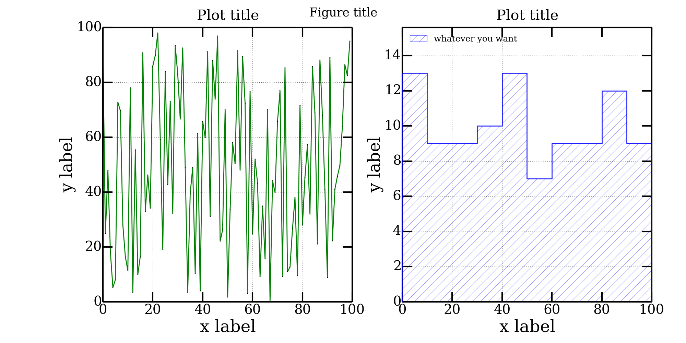

Python plot examples
Posted: | More posts about Python plot veusz matplotlib |
Two examples on how to make plots with Veusz and
Matplotlib.
I prefer Veusz because it's easier to configure, modify and it produces
perfect pdf plots, but sometimes Matplotlib it's faster for producing just
a draft plot to inspect data!
#!/usr/bin/env python # -*- coding: utf8 -*- from __future__ import division # no more "zero" integer division bugs!:P import time import numpy as np import veusz.embed as ve def sm_hist(data, delta=5, n_bin=None, range_=None): dataMin = np.floor(data.min()) dataMax = np.ceil(data.max()) n_bin = np.ceil(1.*(dataMax-dataMin) / delta) range_ = (dataMin, dataMin + n_bin * delta) counts, bin_edges = np.histogram(data, n_bin, range_, density = False) return counts, bin_edges def sm_hist2(data, delta=5): dataMin = np.floor(data.min()) dataMax = np.ceil(data.max()) n_bin = np.ceil(1.*(dataMax-dataMin) / delta) + 1 idxs = ((data - dataMin) / delta).astype(int) counts = np.zeros(n_bin) bin_edges = np.arange(dataMin, dataMax+2, delta) for idx in idxs: counts[idx] += 1 counts = np.hstack((np.array([0]), counts, np.array([0]))) bin_edges = np.hstack((bin_edges[0], bin_edges, bin_edges[-1])) return counts, bin_edges def plotFunc(inpath="./", outpath="./"): font = "Times New Roman" colors = [u'blue', u'green'] xmin = ["auto", "auto"] xmax = ["auto", "auto"] ymin = ["auto", 0] ymax = ["auto", "auto"] xData = np.arange(100) yData = np.random.randint(0, 100, size=100) + np.sin(np.arange(100)) figure = ve.Embedded("Window_1") page = figure.Root.Add('page', width = '30cm', height='15cm') grid = page.Add('grid', autoadd = False, rows = 1, columns = 2, scaleRows=[0.2], topMargin='1cm', bottomMargin='1cm' ) graphList = [] graphList.append(grid.Add('graph', name="scatter", autoadd=False, hide = False, Border__width = '2pt', leftMargin = '0.6cm', rightMargin = '0.4cm', topMargin = '0.5cm', bottomMargin = '1cm', )) graphList.append(grid.Add('graph', name="hist", autoadd=False, hide = False, Border__width = '2pt', leftMargin = '2cm', rightMargin = '0.4cm', topMargin = '0.5cm', bottomMargin = '1cm', )) for i in range(len(graphList)): graphList[i].Add('axis', name='x', label = "x", min = xmin[i], max = xmax[i], log = False, Label__size = '25pt', Label__font = font, TickLabels__size = '17pt', TickLabels__format = u'Auto', MajorTicks__width = '2pt', MajorTicks__length = '10pt', MinorTicks__width = '1pt', MinorTicks__length = '6pt' ) graphList[i].Add('axis', name='y', label = "y", direction = 'vertical', min = ymin[i], max = ymax[i], log = False, autoRange = u'+5%', Label__size = '25pt', Label__font = font, TickLabels__size = '20pt', TickLabels__format = u'Auto', MajorTicks__width = '2pt', MajorTicks__length = '10pt', MinorTicks__width = '1pt', MinorTicks__length = '6pt' ) graphList[0].Add('xy', key="scatterPlotKey", name='scatterPlotName', marker = u'circle', MarkerFill__color = colors[0], markerSize = u'3pt', ) xDataName = "xScatterData" yDataName = "yScatterData" figure.SetData(xDataName, xData) figure.SetData(yDataName, yData) graphList[0].scatterPlotName.xData.val = xDataName graphList[0].scatterPlotName.yData.val = yDataName counts, bin_edges = sm_hist2(yData, delta=5) graphList[1].Add('xy', key="histPlotKey", name='histPlotName', xData = bin_edges, yData = counts, marker = 'none', PlotLine__steps = u'left', PlotLine__color = colors[1], PlotLine__style = u"solid", PlotLine__width = u'3', FillBelow__color = colors[1], FillBelow__style = "forward 2", FillBelow__hide = False, FillBelow__transparency = 70, #FillBelow__backtransparency = 50, FillBelow__linewidth = '1pt', FillBelow__linestyle = 'solid', FillBelow__backcolor = "white", FillBelow__backhide = True, Label__posnHorz = 'right', Label__size = '14pt', Label__color = 'black' ) histKey = graphList[1].Add('key', autoadd=False, horzPosn = 'left', vertPosn = 'top', Text__font = font, Text__size = '15', Border__width = '1.5pt' ) end = raw_input("Press any key to finish...") figure.Save("example.vsz") figure.Export("example.png", backcolor='#ffffff') figure.Export("example.pdf") if __name__ == "__main__": inpath = "./" outpath = './' tt = time.time() plotFunc(inpath, outpath) print "Done in ", time.time()-tt, " seconds."

#!/usr/bin/env python # -*- coding: utf8 -*- from __future__ import division # no more "zero" integer division bugs!:P import time import numpy as np import matplotlib.pylab as plt import matplotlib.font_manager as font_manager # SM like style params = {'backend': 'png', 'font.family': "serif", 'font.size': 25, 'axes.labelsize': 35, #'text.fontsize': 30, 'legend.fontsize': 30, 'xtick.labelsize': 28, 'xtick.major.size': 20.0, 'xtick.major.width': 3.0, 'xtick.minor.size': 12.0, 'xtick.minor.width': 2, 'ytick.labelsize': 28, 'ytick.major.size': 20.0, 'ytick.major.width': 3.0, 'ytick.minor.size': 12.0, 'ytick.minor.width': 2, #'text.usetex': True, 'axes.linewidth': 3.0, 'lines.linewidth': 2, 'lines.markersize': 15, 'axes.grid': False, 'grid': {'color':'gray', 'linestyle':'-', 'linewidth':1}, 'figure.figsize': (10,10), 'figure.subplot.left': 0.15, # the left side of the subplots of the figure 'figure.subplot.right' : 0.95, # the right side of the subplots of the figure 'figure.subplot.bottom' : 0.12, # the bottom of the subplots of the figure 'figure.subplot.top' : 0.92, # the top of the subplots of the figure 'figure.subplot.wspace' : 0.2, # the amount of width reserved for blank space between subplots 'figure.subplot.hspace' : 0.2, # the amount of height reserved for white space between subplots 'figure.figsize': (12, 12) } plt.rcParams.update(params) def sm_hist(data, delta=5, n_bin=None, range_=None): dataMin = np.floor(data.min()) dataMax = np.ceil(data.max()) n_bin = np.ceil(1.*(dataMax-dataMin) / delta) range_ = (dataMin, dataMin + n_bin * delta) counts, bin_edges = np.histogram(data, n_bin, range_, density = False) # These two lines double the points let you make the histogram counts = np.ravel(zip(counts,counts)) bin_edges = np.ravel(zip(bin_edges,bin_edges)) counts = np.hstack((np.array([0]), counts, np.array([0]))) return counts, bin_edges def sm_hist2(data, delta=5): dataMin = np.floor(data.min()) dataMax = np.ceil(data.max()) n_bin = np.ceil(1.*(dataMax-dataMin) / delta) + 1 idxs = ((data - dataMin) / delta).astype(int) counts = np.zeros(n_bin) bin_edges = np.arange(dataMin, dataMax+delta, delta) for idx in idxs: counts[idx] += 1 print counts # These two lines double the points let you make the histogram counts = np.ravel(zip(counts,counts)) bin_edges = np.ravel(zip(bin_edges,bin_edges)) counts = np.hstack((np.array([0]), counts)) bin_edges = np.hstack((bin_edges, bin_edges[-1])) return counts, bin_edges def singlePlotScatter(xData, yData, nRows, nCols, x0, y0, rowspan, colspan): ax = plt.subplot2grid((nRows,nCols), (x0,y0), rowspan, colspan) ax.set_xlabel("x label") ax.set_ylabel("y label") ax.set_xscale("linear") ax.set_yscale("linear") ax.set_title("Plot title") ax.title.set_y(1.02) # adjust title position ax.xaxis.grid(True, which="both") ax.yaxis.grid(True, which="major") ax.plot(xData, yData, color = "green", markeredgewidth = 0.8, linestyle = '-', linewidth = 2, marker = 'o', markersize = 1, label = "label") return ax def singlePlotHist(yData, nRows, nCols, x0, y0, rowspan, colspan): ax = plt.subplot2grid((nRows,nCols), (x0,y0), rowspan, colspan) ax.set_xlabel("x label") ax.set_ylabel("y label") ax.set_xscale("linear") ax.set_yscale("linear") ax.set_title("Plot title") ax.title.set_y(1.02) # adjust title position ax.xaxis.grid(True, which="both") ax.yaxis.grid(True, which="major") counts, bin_edges = sm_hist2(yData, delta = 10) ax.set_ylim((0, 1.2*counts.max())) ax.plot(bin_edges, counts, color = "blue", alpha = 0.8, linewidth = 2, antialiased = True, zorder = 3 ) ax.fill(bin_edges, counts, alpha = 0.5, hatch = "/", edgecolor = "blue", facecolor = "white", antialiased = True, label = "whatever you want" ) ax.legend(loc='upper left', numpoints = 1, prop=font_manager.FontProperties(size=18)).draw_frame(False) return ax if __name__ == "__main__": tt = time.time() xData = np.arange(100) yData = np.random.randint(0, 100, size=100) + np.sin(np.arange(100)) fig = plt.figure() fig.suptitle("Figure title") axs = [] nPlots = 2 axs.append(singlePlotScatter(xData, yData, nRows=1, nCols=2, x0=0, y0=0, rowspan=1, colspan=1)) axs.append(singlePlotHist(yData, nRows=1, nCols=2, x0=0, y0=1, rowspan=1, colspan=1)) fig.set_size_inches(20, 10) plt.savefig("./grid.png", dpi=100) plt.close(fig) print "Done in ", time.time()-tt, " seconds."
